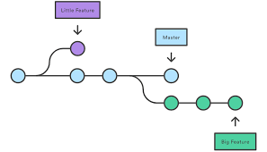
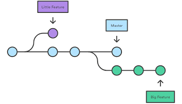

¿Qué es un software de control de versiones?
Un sistema de control de versiones, a partir de ahora SCV, es un sistema que te ayuda a tener el control y a gestionar los cambios generados en todos los elementos de nuestro producto o software, en este caso, todos nuestros archivos. Y es posible que penséis que eso podéis hacerlo vosotros mismos… guardando una copia de vuestro proyecto cada cierto tiempo y nombrándolo y versionándolo correctamente. Si, podéis hacerlo, pero un SCV te provee de herramientas y mecanismos mucho mas fiables, potentes y funcionales que una simple copia de seguridad
Git es un sistema de control de versiones distribuido , mediante el cual podemos trabajar a nivel local sin tener que comprometer el repositorio principal a cada cambio que realicemos. Gracias a este sistema, los desarrolladores del proyecto podrán trabajar de forma independiente hasta el momento en el que tengan que poner en común con el resto del equipo su código, controlando los cambios en las versiones y mejorando el seguimiento al desarrollo.
¿Para que sirve github?
aloja tu repositorio de código y te brinda herramientas muy útiles para el trabajo en equipo, dentro de un proyecto.
Además de eso, puedes contribuir a mejorar el software de los demás. Para poder alcanzar esta meta, GitHub provee de funcionalidades para hacer un fork y solicitar pulls
Realizar un fork es simplemente clonar un repositorio ajeno (genera una copia en tu cuenta), para eliminar algún bug o modificar cosas de él. Una vez realizadas tus modificaciones puedes enviar un pull al dueño del proyecto. Éste podrá analizar los cambios que has realizado fácilmente, y si considera interesante tu contribución, adjuntarlo con el repositorio original.
 

referecias bibliograficas
https://www.yunbitsoftware.com/blog/2016/12/28/tutorial-git-conceptos-basicos/
https://openwebinars.net/blog/conceptos-basicos-de-git/
https://conociendogithub.readthedocs.io/en/latest/data/introduccion/